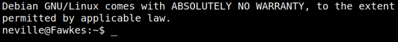
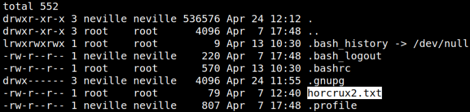
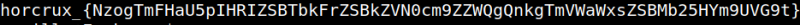
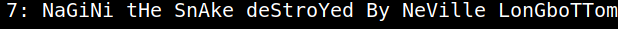

5.3 SSH using neville. Second flag.
1. Connect via SSH from your Kali Machine with the previous credentials.
$ssh neville@192.168.12.20
Output:

2. Enumerate the files.
neville@Fawkes:~$ls -al
Output:

3. Showing the file.
neville@Fawkes:~$cat horcrux2.txt
Output:

4. Decode the message.
$echo 'NzogTmFHaU5pIHRIZSBTbkFrZSBkZVN0cm9ZZWQgQnkgTmVWaWxsZSBMb25HYm9UVG9t' | base64 --decode
Output:
